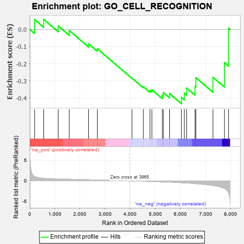
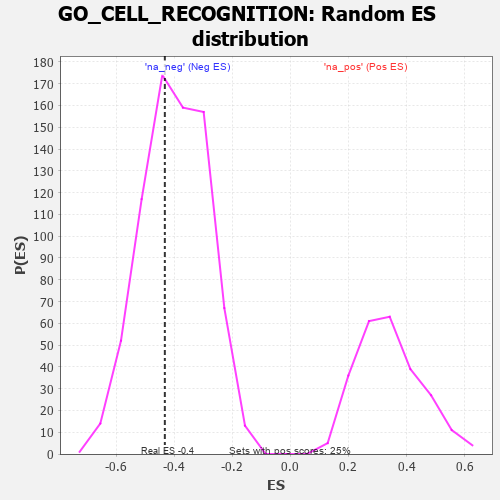

| | | Dataset | 7d |
| Phenotype | NoPhenotypeAvailable |
| Upregulated in class | na_neg |
| GeneSet | GO_CELL_RECOGNITION |
| Enrichment Score (ES) | -0.43264708 |
| Normalized Enrichment Score (NES) | -1.0875435 |
| Nominal p-value | 0.38594165 |
| FDR q-value | 0.7632216 |
| FWER p-Value | 1.0 |
Table: GSEA Results Summary

Fig 1: Enrichment plot: GO_CELL_RECOGNITION
Profile of the Running ES Score & Positions of GeneSet Members on the Rank Ordered List
| PROBE | GENE SYMBOL | GENE_TITLE | RANK IN GENE LIST | RANK METRIC SCORE | RUNNING ES | CORE ENRICHMENT | | 1 | NCAM2 | | | 191 | 1.085 | 0.0578 | No |
| 2 | JMJD6 | | | 553 | 0.613 | 0.0585 | No |
| 3 | NCK2 | | | 1131 | 0.458 | 0.0204 | No |
| 4 | CNTN4 | | | 1571 | 0.379 | -0.0062 | No |
| 5 | DOCK8 | | | 2341 | 0.254 | -0.0838 | No |
| 6 | DSCAM | | | 2689 | 0.200 | -0.1123 | No |
| 7 | ROBO2 | | | 4066 | -0.018 | -0.2840 | No |
| 8 | NPTN | | | 4519 | -0.098 | -0.3334 | No |
| 9 | RTN4 | | | 4783 | -0.154 | -0.3549 | No |
| 10 | DLG1 | | | 4860 | -0.169 | -0.3517 | No |
| 11 | EPHA4 | | | 5273 | -0.265 | -0.3835 | No |
| 12 | CD9 | | | 5319 | -0.277 | -0.3683 | No |
| 13 | FOLR2 | | | 5563 | -0.336 | -0.3735 | No |
| 14 | HVCN1 | | | 6034 | -0.482 | -0.3963 | Yes |
| 15 | FEZF2 | | | 6150 | -0.519 | -0.3717 | Yes |
| 16 | VDAC2 | | | 6242 | -0.553 | -0.3415 | Yes |
| 17 | ROBO1 | | | 6577 | -0.699 | -0.3308 | Yes |
| 18 | TUB | | | 6611 | -0.718 | -0.2809 | Yes |
| 19 | ASTL | | | 7290 | -1.159 | -0.2789 | Yes |
| 20 | CASP3 | | | 7747 | -1.902 | -0.1929 | Yes |
| 21 | ZAN | | | 7912 | -2.932 | 0.0074 | Yes |
Table: GSEA details [plain text format]

Fig 2: GO_CELL_RECOGNITION: Random ES distribution
Gene set null distribution of ES for GO_CELL_RECOGNITION